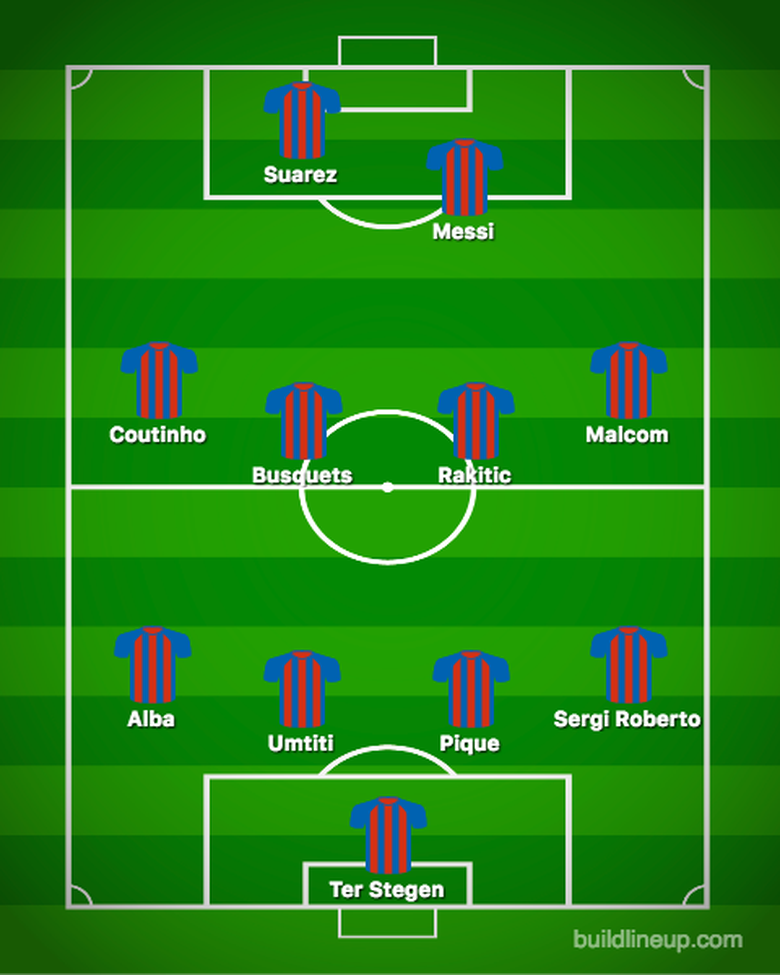

Pemain dan Formation :
> Pemain Barcelona
Kiper
No punggunng : 1 - Marc-Andre ter Stegen (Jerman)
No punggunng : 13 - Jasper Cillessen (Belanda)
Bek
No punggunng : 3 - Gerard Pique (Spanyo)
No punggunng : 18 - Jordi alba (Spanyol)
No punggunng : 20 - Sergi Roberto (Spanyol)
No punggunng : 23 - Samuel Umtiti (Prancis)
No punggunng : 24 - Thomas Vermaelenn (Belgia)
Gelandang
No punggunng : 4 - Ivan Rakitic (Kroasia)
No punggunng : 5 - Sergio Busquets (Spanyol)
No punggunng : 6 - Denis Suarez (Spanyol)
No punggunng : 8 - Arthur (Brasil)
No punggunng : 14 - Philippe Coutinho (Brasil)
No punggunng : 16 - Sergi Samper (Spanyol)
No punggunng : 22 - Arturo Vidal (Chile)
No punggunng : 26 - Carles Alena (Spanyol)
Penyerang
No punggunng : 9 - Luis Suarez (Uruguay)
No punggunng : 10 - Lionel Messi (Argentina)
No punggunng : 11 - Ousmane Dembele (Prancis)
No punggunng : 14 - Malcom (Brasil)
> Formation Barcelona
